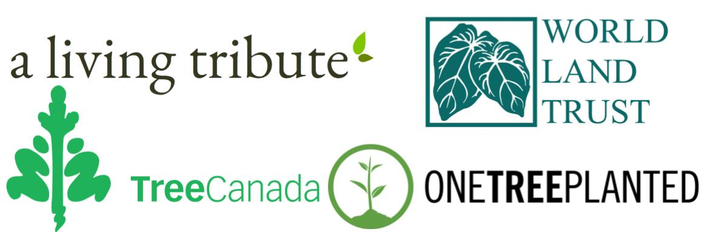

Below are several great oppritunities for you to make a difference. Explore different companies and find which of their goals align with your own.

A living tribute allows you to plant a tree in memory of someone or gift someone a tree within Canada. You can choose from various locations and plant between one and 500 trees, prices start at $25.00. Visit a living tribute!
For just a dollar a tree One Tree Planted will plant trees where they are needed most. You can visit their website below to see where they are actively planting. Through One Tree Planted you can also set up recurring donations to continue your efforts. Visit One Tree Planted!
For $5.00 a tree you can pick a Canadian region that you feel needs support. Tree Canada’s main focus is offsetting the carbon footprint through reforestation. Visit Tree Canada!
The World Land Trust not only plants trees but also protects and preserves them. They are an international conservation charity with a focus on threatened habitats and endangered species. Visit World Land Trust! 